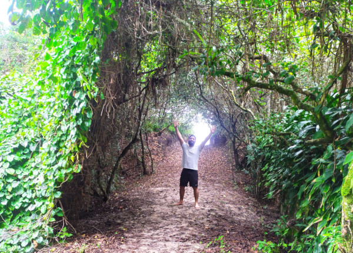
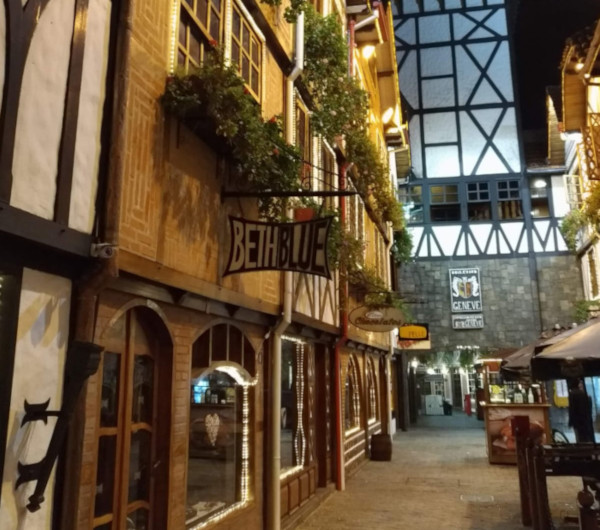

Viajando Pelo Interior SP

Ilha do Cardoso - Um paraíso no interior


Nossas experiências pelo interior, com várias dicas e opiniões sobre os lugares que passamos.

Socorro, trilhas e aventuras.

Campos do Jordão - Um de nossos destinos favoritos.